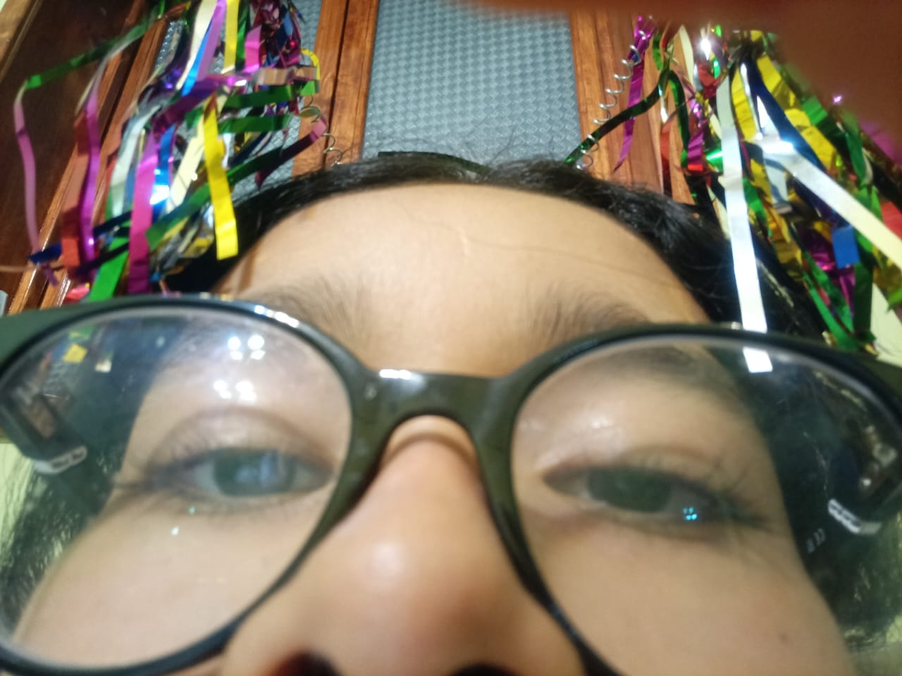
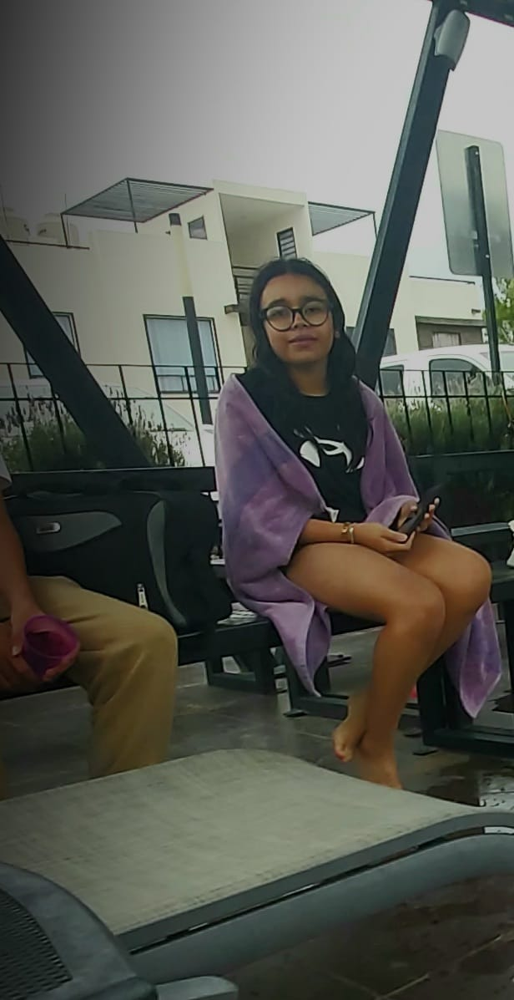
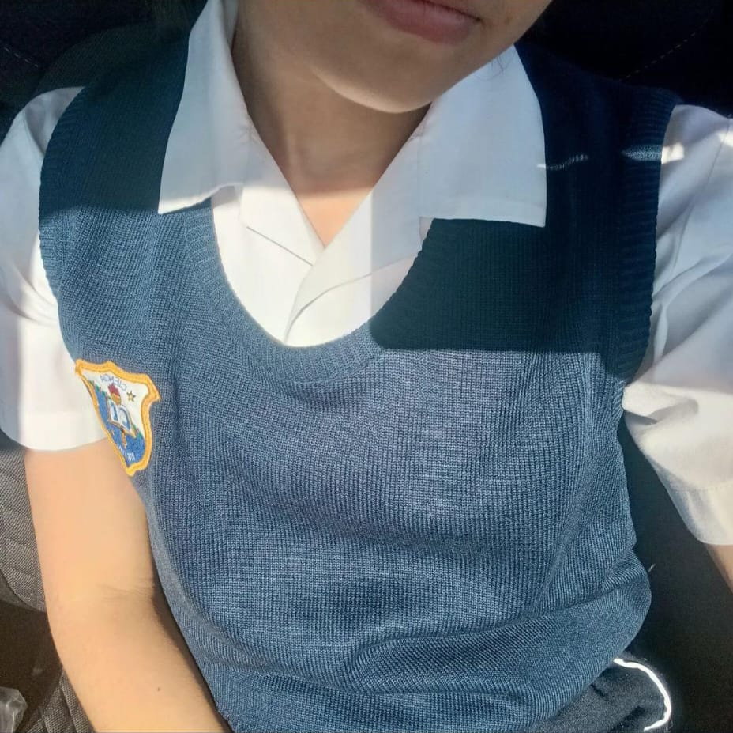
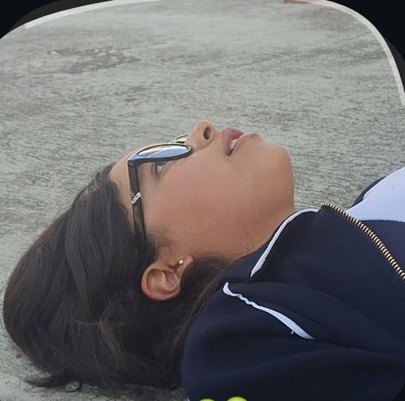
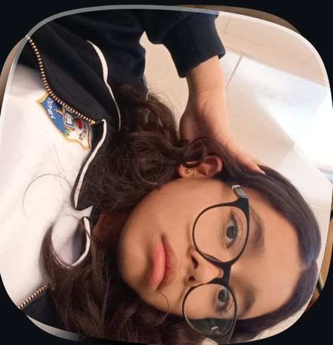
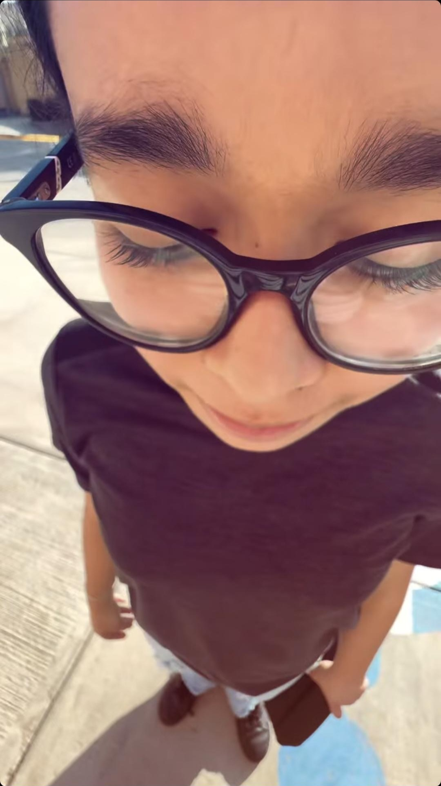
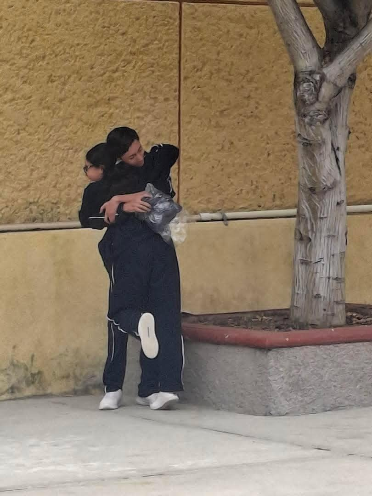
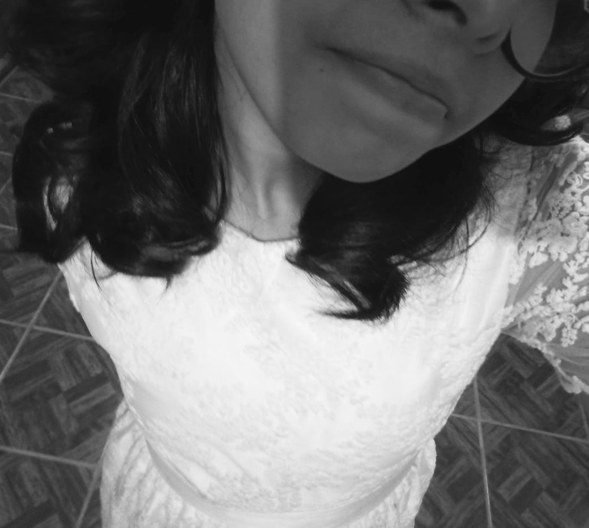

Acceso exclusivo para Daiana
Introduce la contraseña para ver la página.
Entrar
Borrar
Contraseña incorrecta
Recordar en este equipo
ELLA
— MILO J VIBES —
Poema de Ella
Carencias de Cordura
A VOS
Poema 1
Carta de Ella
OLIMPO
Morocha
Poema 2
Carta de su Cumple
Tus Vueltas
El Bolero
Último poema
Otra Canción
Otra Canción
Otro Poema








Aún no está listo.